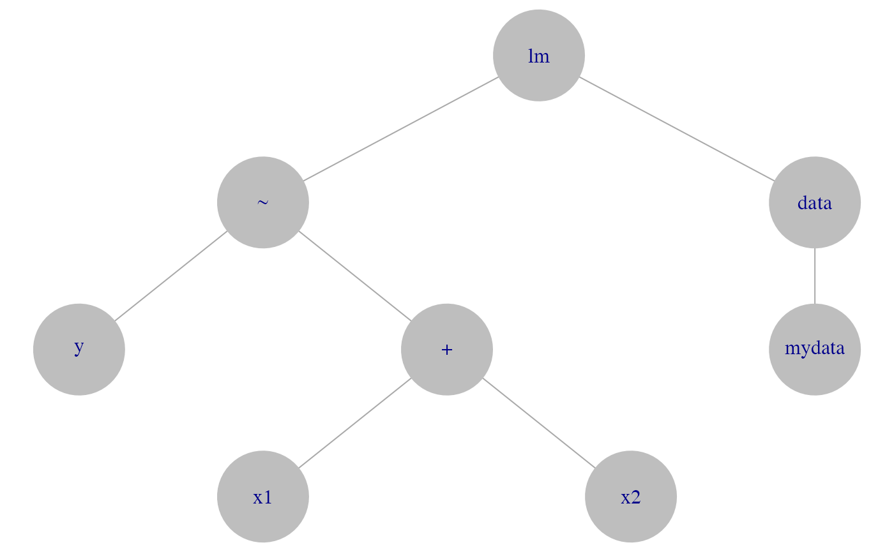
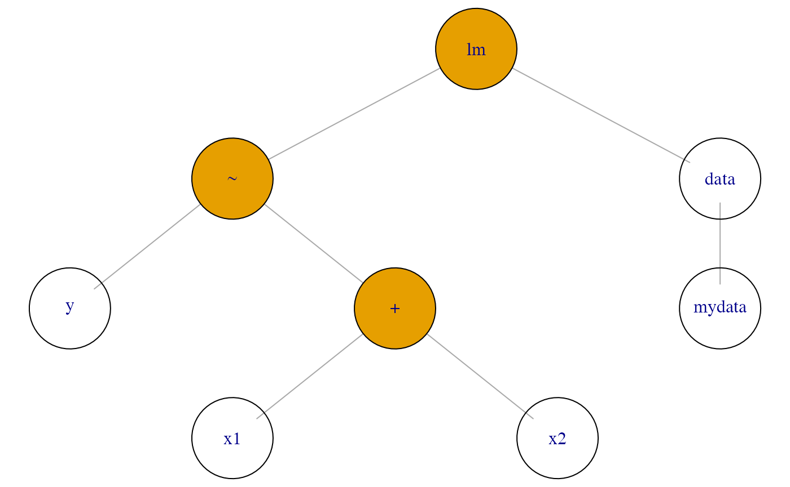

TreeHarp S4 class
treeharp_class.RmdIntroduction
Within autoharp, the TreeHarp S4 class is used to
represent an R expression. It can then be manipulated in several ways in
order to perform static code analysis of student submissions.
The lintr package does an excellent job of parsing R
code, but it provides too much detail for the simpler tasks that
autoharp carries out. It is still used in the constructor,
but some of the parsed output from lintr are dropped. For
instance, the ( parentheses are dropped.
To understand the elements in a TreeHarp, let us consider the use of
a simple expression. Suppose we fit a linear model to variables in a
dataset. To create a TreeHarp object from an expression, we provide the
expression together with the quote = TRUE argument. This is
important because method dispatch is performed based on that second
argument, not the first! If we were to dispatch on the first, R would
evalate the expression in order to check its class - thus destroying the
expression we intended to capture.
TreeHarp objects have an associated plot method for visualisation of
the expression. This method relies on the plotting functions from the
igraph package. The full set of parameter options from
igraph can be utilised when plotting TreeHarp objects.
Figure 1 displays the visualisation of the tree1 object
created earlier.
opar <- par(mar=c(0,0,0,0))
plot(tree1, vertex.size=25, asp=0.6, vertex.color="gray", vertex.frame.color=NA)
Example TreeHarp object
par(opar)Slots
There are 4 slots in a TreeHarp object. The only required one for valid instantiation is the adjList.
adjList
slot(tree1, "adjList")
#> $lm
#> [1] 2 3
#>
#> $`~`
#> [1] 4 5
#>
#> $data
#> [1] 6
#>
#> $y
#> NULL
#>
#> $`+`
#> [1] 7 8
#>
#> $mydata
#> NULL
#>
#> $x1
#> NULL
#>
#> $x2
#> NULLThis slot contains an adjacency list that represents the tree structure of the code. Nodes in a tree are labelled in Breadth-First Search (BFS) order. Thus the root node has id 1, and does not appear in the adjacency list. To avoid redundancy, the TreeHarp convention is to list each edge only once, as a child. Here’s what we mean: node 2 in the example above is a neighbour of node 1 and 4, but it only appears under node 1. It does not appear as an adjacent node of node 4 because it is not child of node 4. Terminal nodes (leafs) have a NULL entry in the list.
nodeTypes
If the TreeHarp object was constructed from an R language object, this slot will be automatically populated. To identify node types, functions from rlang are applied to sub-expressions defined by nodes recursively. Each node is then identified as either:
- a function call, or
- a formal argument.
The nodeTypes slot stores the information in a data
frame with one row per node. The columns are:
- id (node id). The root node has id 1.
- name. The name of the node.
- call_status. A TRUE/FALSE column indicating if the node was a call or not.
- formal_arg. If the node is not a call, then this column will indicate if it is a formal argument or not. If it is not a call and not a formal argument, it is a symbol representing an R object - we call this an actual argument.
- depth. This is the depth of the node in the tree. The root of the tree has depth 1.
autoharp provides a getter function to retrieve the node types easily.
get_node_types(tree1)
#> id name call_status formal_arg depth
#> 1 1 lm TRUE FALSE 1
#> 2 2 ~ TRUE FALSE 2
#> 3 3 data FALSE TRUE 2
#> 4 4 y FALSE FALSE 3
#> 5 5 + TRUE FALSE 3
#> 6 6 mydata FALSE FALSE 3
#> 7 7 x1 FALSE FALSE 4
#> 8 8 x2 FALSE FALSE 4call
The call slot stores the original expression that was used to construct the TreeHarp object, just in case it needs to be executed later.
slot(tree1, "call")
#> lm(y ~ x1 + x2, data = mydata)repr
The repr slot contains a string representation of the object. If the
original TreeHarp object has been modified, then it may not be a proper
R expression, so this slot stores the best representation of it. This
slot is used when the object is printed, or when show is
called on the S4 object.
tree1
#> lm(y ~ x1 + x2, data = mydata)TreeHarp Methods
As we have already demonstrated, the plot method exists for this class. It relies on the tree layout of igraph package, but additional arguments can be used to customise the plot. For instance, we could use colour to distinguish between calls and non-call nodes:
opar <- par(mar=c(0,0,0,0))
plot(tree1, vertex.size=25, asp=0.6, vertex.color=tree1@nodeTypes$call_status)
TreeHarp object with colored nodes
par(opar)These are the other S4 methods defined for the TreeHarp class:
-
length: returns the number of nodes. -
names: returns the node names. -
get_parent_id: returns the parent id of a node. -
get_child_ids: returns the ids of the children of a node. -
get_node_types: returns the nodeTypes slot from a TreeHarp object. -
get_adj_list: returns the adjacency list slot from a TreeHarp object.